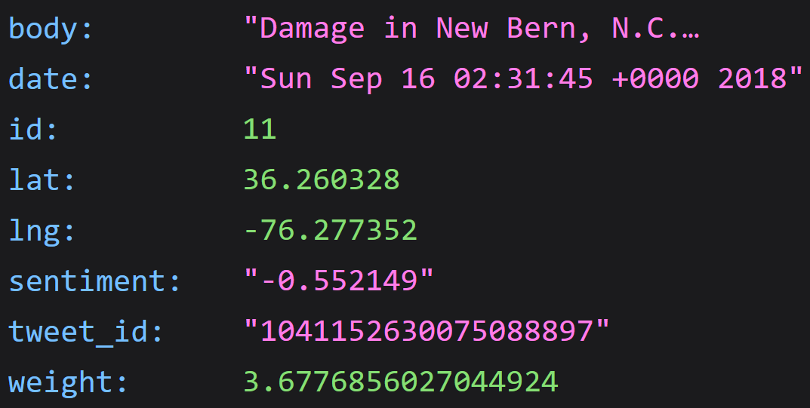

MapMagic
Menu
Simplified location analytics
We help you save time so you can save lives
See it in action
Hurricane Florence Severity
Twitter sentiment analysis with geolocation, powered by IBM Watson
Try out the api now at
api.mapmagic.io
